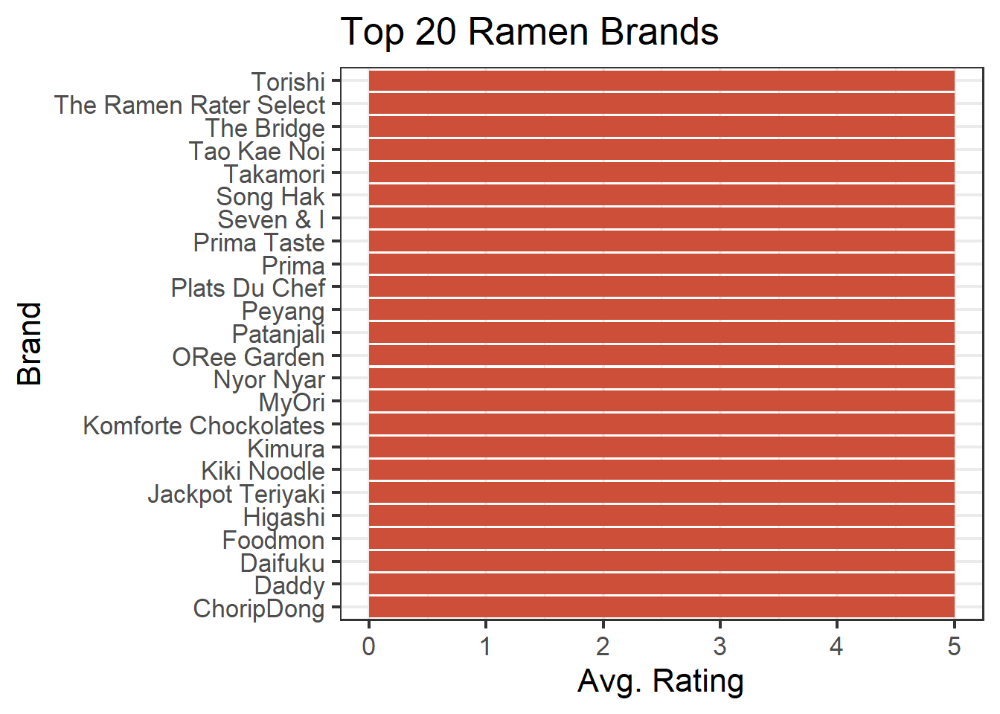

ui <- fluidPage(
# Application title
titlePanel("Old Faithful Geyser Data"),
# Sidebar with a slider input for number of bins
sidebarLayout(
sidebarPanel(
sliderInput("bins",
"Number of bins:",
min = 1,
max = 50,
value = 30)
),
# Show a plot of the generated distribution
mainPanel(
plotOutput("distPlot")
)
)
)Create an Interactive Web App With R Shiny

What is R Shiny?
Have you ever wanted to change your ggplots with the click of a button? Wouldn’t it be nice to use a drop-down menu to filter your data? R Shiny allows you and others to interact with your code through a graphic web interface. For this Extra, we will create an interactive dashboard using R Shiny.
Important Links
The data: ramen-ratings.csv
This file includes over 2,500 ratings of different types of ramen collected by the Ramen Rater and published on kaggle.
Prerequisites
This Extra does not explain concepts already covered in the R Open Labs lessons. Before you begin, you should already know how to do the following:
- Set up a project in R
- Load packages and data
- Use numeric indexing
- Work with factors and levels
- Create a ggplot bar chart
- Use conditionals
- Group, summarize and arrange data
- Use pipes
- Filter data
- Join multiple datasets
In addition, when using web application tools like R Shiny, it is always helpful have a basic, working familiarity with HTML and CSS. You will be able to complete this Extra without adding any HTML or CSS, but the finished web page will not look as nice! If you are new to web markup languages, the tutorials at w3schools are a good place to start.
Getting Started
Begin by creating a new project in R Studio, but be sure to select Shiny Web Application.

You will be provided with a new file called “app.R” which already has some code written for you. This file will serve as a template for creating your R Shiny app. Take a look at the code in action by clicking the Run App button in the upper right corner of the script editor.

A new tab should open up in your web browser and display something that looks like this:

Try moving the “Number of bins” slider up and down and watch what happens to the histogram. This is a basic example of the type of interactive controls you can create in a Shiny web app.
Now, close the browser tab and return to R studio. Take a look at your console. It will say something like “Listening on http://127.0.0.1:xxx”. This means our app is still running locally, and we will be unable to run any new code in R until we stop it. Click on the stop sign icon in the upper right hand corner of your console to terminate the app.

The Template
Now let’s take a closer look at the template R Studio has given us. We have two objects that divide up the code for our app: a ui object and a server object.
In an R Shiny app, the UI contains code that produces a user interface, that is, controls a user can manipulate in order to interact with the app. It also defines the layout and appearance of our app. In our current UI, we can see a title, a sidebar with slider input, and a main panel where our histogram appears. Note that every element of our UI is separated by a comma.
The server contains code that makes the ui work. We use the server to tell our app what will happen if someone clicks on something, slides something up or down, or selects something from a menu. Our server code currently includes the creation of an object called “x” which holds our data for Old Faithful, as well as an object called “bins” which determines the sequence of bins to be used by the histogram. Our server is also where we keep the code that generates the histogram itself.
server <- function(input, output) {
output$distPlot <- renderPlot({
# generate bins based on input$bins from ui.R
x <- faithful[, 2]
bins <- seq(min(x), max(x), length.out = input$bins + 1)
# draw the histogram with the specified number of bins
hist(x, breaks = bins, col = 'darkgray', border = 'white')
})
}Notice that our server uses a function with input and output as arguments. The input argument gets updated whenever a user manipulates something in the UI. The output argument is supplied by the server in order to create a reaction to the user’s input. In our server code, we can see the output argument is updated by the renderPlot() function, which will later be covered in more detail.
Clean out the Template
Now that we’re ready to begin creating our own Shiny app, we should remove the unnecessary parts of the template. We only need the structure for the UI and server along with a new title, so edit the template to look like this:
library(shiny)
# Define UI for application
ui <- fluidPage(
# Application title
titlePanel("Ramen Reviews")
)
# Define server logic
server <- function(input, output) {
}
# Run the application
shinyApp(ui = ui, server = server)Load Packages and Data
The shiny package has already been loaded for us, but we’ll need to add a few more in order to create the dashboard.
library(shiny)
library(tidyverse)
library(spData) # For getting spatial data
library(sf) # For preserving spatial data
library(leaflet) # For making maps
library(DT) # For making fancy tablesLet’s also load some data. Be sure to create a new “data” folder inside of your project folder and use it to store the “ramen-ratings.csv” file linked under “Important Files and Links” above. We’ll also need some spatial data for making the map. Add the following code below the library() functions but above the ui.
# Load review data
ratings <- read.csv("data/ramen-ratings.csv")
# Load map data
mapData <- world[c(2,11)]The world dataset comes from the spData package. It includes the name of every country in the world, a column of spatial data for plotting polygons of the countries on a map, and various statistics for each country. We only need the country names and spatial data, so we’re only using two columns from the dataset.
Clean the Data
We have some problems with our ratings data, so it needs to be cleaned before we get to the UI. First, let’s take a look at our Stars column:
class(ratings$Stars)[1] "character"levels(ratings$Stars)NULLR is reading our Stars column as a factor rather than as numeric because we have some varieties of ramen that are “Unrated”. Let’s filter out all of the unrated varieties and make the column numeric. Add the following code below where you’ve loaded the data:
# Clean review data
ratings <- filter(ratings, Stars != "Unrated")
ratings$Stars <- as.numeric(as.character(ratings$Stars))Next, we need to fix our Country column. The ramen dataset uses country names that differ from the spatial dataset. Recode the country names as follows:
# Clean country data
ratings$Country <- recode(ratings$Country,
USA = "United States",
`South Korea` = "Republic of Korea",
Singapore = "Malaysia",
`Hong Kong` = "China",
UK = "United Kingdom",
Sarawak = "Malaysia",
Holland = "Netherlands",
Dubai = "United Arab Emirates")Create a Bar Chart
With our data cleaned up, we can begin visualization. We’ll start with the bar chart. First, we need to create a place within the UI where the bar chart will be displayed. To do that, we use the plotOutput function. Remember to separate you UI elements (in this case, the title and bar chart) with a comma.
ui <- fluidPage(
# Application title
titlePanel("Ramen Reviews"),
# Bar Chart
plotOutput("brandBar")
)Note that we’ve given our bar chart a name: “brandBar”. We use it again below when we start adding code to the server section.
# Define server logic
server <- function(input, output) {
# Create bar chart of brands
output$brandBar <- renderPlot({
})
}The renderPlot() function captures an image produced by ggplot and sends it to our UI. Note that renderPlot() is assigned to output$brandBar. The object called output is a list-like object, and each time we add something to it, we have to give it a “slot” with its own name. brandBar is the name we’ve chosen for the slot that will contain an image of our bar chart.
However, before we can use ggplot to create our bar chart, we’ll need to do some data transformations. Remember: we want a bar chart for only the top 20 brands of ramen. That means we’ll have to group, summarize and arrange our data first.
# Create bar chart of brands
output$brandBar <- renderPlot({
# Get top 20 brands
brands <- group_by(ratings, Brand) %>%
summarise(avgRating = mean(Stars)) %>%
arrange(desc(avgRating)) %>%
top_n(20)
})So we’ve grouped our reviews by brand, retrieved the average rating for each brand, arranged the brands in descending order, then selected the top 20. Now we can generate a bar chart. The following code should go within the renderPlot() function. After adding it, click on Run App to see how it turns out. Don’t forget to press the stop sign icon when you’re done.
# Get top 20 brands
brands <- group_by(ratings, Brand) %>%
summarise(avgRating = mean(Stars)) %>%
arrange(desc(avgRating)) %>%
top_n(20)
# Bar chart
ggplot(brands, aes(reorder(Brand, avgRating))) +
geom_bar(aes(weight = avgRating), fill = "tomato3") +
coord_flip() +
ggtitle("Top 20 Ramen Brands") +
xlab("Brand") +
ylab("Avg. Rating") +
theme_bw(base_size = 16)
Well, that’s not too interesting, is it? Unfortunately, there are more than 20 brands of ramen with an average rating of 5.0, so our bar chart isn’t very useful at the moment.
To get more helpful information from this chart, we’ll need to break the data down into a greater level of detail. One method would be to find the top 20 brands for each of the different styles of ramen. In our dataset we have bowls, cups, packs, etc. This is a good opportunity to bring in a dynamic menu that will allow our users to select which style of ramen they’re interested in.
Create Dynamic Menus
First, we need to create the menu in the UI. We’ll put it above the bar chart.
ui <- fluidPage(
# Application title
titlePanel("Ramen Reviews"),
# Style Menu
selectInput("style", "Style", c("All",
"Bowl",
"Box",
"Cup",
"Pack",
"Tray")),
# Bar Chart
plotOutput("brandBar")
)The selectInput function above is using three arguments. The first is a name for the input which we are simply calling “style”. Again, this will become important when we are writing code for the server.
The next argument in our selectInput function is the label, or title, for the menu that will be displayed on the page. The final argument we’re using is a list of menu choices. Note that we are not inlcuding all of the ramen styles in the dataset. I’ve omitted the “Bar” and “Can” styles because there is only one brand of each, and a bar chart with a single bar on it just looks sad.
Now we need to create the menu’s functionality on the server. When the user selects a particular style from the menu, we are going to filter the dataset by that style. But what if the user chooses “All” ? In that case, we don’t want to filter anything. So, our filter needs to be nested inside a conditional. The code below should go within our renderPlot function, at the top.
# Create bar chart of brands
output$brandBar <- renderPlot({
# Filter data based on selected Style
if (input$style != "All") {
ratings <- filter(ratings, Style == input$style)
}Note that our conditional and filter use input$style. Here, you can see how our input object has different slots for each input, just as our output object has different slots for each output.
Let’s see if it works. Run your app and make a selection from the menu. It should look something like this:

Now our users can select a specific style of ramen they’re interested in, but what if they want to look at the top brands for a specicific country? We can use the same process to create a country menu. First, in the UI section, add the following below the Style menu:
# Country menu
selectInput("country", "Country", levels(ratings$Country) %>%
append("All") %>% # Add "All" option
sort()), # Sort options alphabeticallyThis time, instead of listing each menu option, we’re using levels(ratings$Country). Why? Because typing out the name for each of the 33 countries in our dataset doesn’t seem like it would be very fun. The only problem with using the levels of our Country column is that they don’t include an option for “All”. So, we’ve appended an item called “All” to our list of countries, then sorted that list alphabetically which ensures “All” shows up at the top.
Next, we add the functionality to the server.
# Filter data based on selected Country
if (input$country != "All") {
ratings <- filter(ratings, Country == input$country)
}This gives the user two different options for filtering the bar chart (and other visualizations we are about to add). Do you have other ideas for user controls that might be helpful in exploring this dataset? If so, take a look at the Shiny Widgets Gallery. It provides examples of all user controls available in Shiny along with the code that makes them work.
Click Run App again and play around with the menus. You’ll notice that with some combinations of filters, our bar chart becomes blank because we’ve filtered all the data from our dataset.

Luckily, there are methods for handling these kinds of problems in Shiny.
Create an Error Message
Error messges are created using the validate() and need() functions, and we should add them below the code for our filters in the server section:
validate (
need(nrow(ratings) > 0, "No reviews found. Please make another selection." )
)The validate() function above can contain any number of tests for displaying different error messages. All tests are defined in nested, separate need() functions. In this case, we are testing nrow(ratings) > 0, or, is the number of rows that remain in our ratings data frame greater than zero? If the test evaluates to FALSE, then the error message is displayed. Run the app again, then select “Bowl” and “Bangladesh” from the menus to see what happens.

Create a Map
There are a number of packages for creating maps in R, but the leaflet package is especially suited for generating interactive maps in R Shiny. Again, we need to create a spot for the visualization in the UI. We’ll put our map below the bar chart.
# Bar Chart
plotOutput("brandBar"),
# Map
leafletOutput("map")All we’ve done above is add the leafletOutput() function and given our map a name. As a very creative person, I’ve chosen the name, “map”.
Now, let’s build the map. At first, we’ll just create a generic world map using the code below. It should go beneath all of the code for output$brandBar in the server section.
# Create world map
output$map <- renderLeaflet({
# Generate basemap
map <- leaflet() %>%
addTiles() %>%
setView(0, 0, 1)
})We’re using the renderLeaflet() function to assign our map to the appropriate output slot. Inside of renderLeaflet(), the leaflet() function generates the map itself. Here, we are creating a basemap, i.e. a “background” map that does not yet have anything plotted on it.
The addTiles() function loads whatever basemap imagery we want to use. In this case, we’re using the default basemap for leaflet, but take a look at this page for other available options.
We’re also setting our map view to 0 lattitude and 0 longitude (the center of the world) at zoom level 1. Click Run App to take a look.

We want to create a choropleth map in which each country is represented by a polygon of a different color depending on the country’s average review score. In order to do that, we’ll first need to get the average review score for each country. The following code should go within the renderLeaflet() function but above the code for the basemap.
# Get average rating by country
countries <- group_by(ratings, Country) %>%
summarise(avgRating = mean(Stars))Once we’ve gotten average ratings for each country, we need to match them up with the spatial information required to draw the polygon shapes. We’ll get that information from the mapData data frame we created at the beginning of the project. Let’s take a look at that now.
head(mapData)Simple feature collection with 6 features and 1 field
Geometry type: MULTIPOLYGON
Dimension: XY
Bounding box: xmin: -180 ymin: -18.28799 xmax: 180 ymax: 83.23324
Geodetic CRS: WGS 84
# A tibble: 6 × 2
name_long geom
<chr> <MULTIPOLYGON [°]>
1 Fiji (((-180 -16.55522, -179.9174 -16.50178, -179.7933 -16.02088, -…
2 Tanzania (((33.90371 -0.95, 31.86617 -1.02736, 30.76986 -1.01455, 30.41…
3 Western Sahara (((-8.66559 27.65643, -8.817828 27.65643, -8.794884 27.1207, -…
4 Canada (((-132.71 54.04001, -133.18 54.16998, -133.2397 53.85108, -13…
5 United States (((-171.7317 63.78252, -171.7911 63.40585, -171.5531 63.31779,…
6 Kazakhstan (((87.35997 49.21498, 86.82936 49.82667, 85.54127 49.69286, 85…mapData has two columns: one that contains the name of each country (name_long), and another that contains our spatial data for drawing polygons (geom). Take a look at the spatial column’s class:
class(mapData$geom)[1] "sfc_MULTIPOLYGON" "sfc" The geom column has the class “sfc” (which stands for “simple feature column”) and “MULTIPOLYGON” which means it contains a list of multiple polygon coordinates needed to draw the shapes of the different countries.
This spatial data is compatible with leaflet as long as it retains its class. Joining it with another data frame will cause it to lose its class unless we have the sf package loaded. We don’t need to use any functions from sf, but we do need to have it loaded into memory before we perform the join. Fortunately, sf was one of the packages we loaded at the beginning of this project.
Now we can join our ratings data with our spatial data.
# Add spatial data to countries dataframe
countries <- left_join(countries, mapData, c("Country" = "name_long"))Time to add the polygons to the map. Our code should look like this:
# Create world map
output$map <- renderLeaflet({
# Get average rating by country
countries <- group_by(ratings, Country) %>%
summarise(avgRating = mean(Stars))
# Add spatial data to countries dataframe
countries <- left_join(countries, mapData, c("Country" = "name_long"))
# Generate basemap
map <- leaflet() %>%
addTiles() %>%
setView(0, 0, 1)
# Add polygons to map
map %>% addPolygons(data = countries$geom)
})The addPolygons() function takes our spatial data column and applies it to the map. What does it look like now? Click Run App to find out.

Obviously, we still have some work to do! In order to give the countries different colors depending on their average rating, we need to create a color palette. Also, roll over one of the polygons on the map and note what happens to the mouse pointer. It changes! That’s because we have an option of adding roll over text labels for each of our countries, so let’s take advantage of that as well.
First, the color palette.
# Create color palette for map
pal <- colorNumeric(palette = "YlOrRd", domain = countries$avgRating)The leaflet function, colorNumeric(), allows us to create a color palette based on a list of numeric values, or “domain”. The domain in this case will be our avgRating column. Note that we’re creating an object called “pal”. What type of object is it?
class(pal)[1] "function"Strangely enough, it’s a function! colorNumeric() creates a color palette function we can later use on our map. Also note: I’ve chosen the “Yellow-Orange-Red” color scale for this map. Other options are shown here.
Next, let’s tackle the roll over labels.
#Create label text for map
map_labels <- paste("Ramen from",
countries$Country,
"has an average rating of",
round(countries$avgRating, 1))Here, we’re using the paste() function to combine multiple strings including the name of the country and its average rating rounded to one decimal point.
Let’s apply the color palette and text labels to the map. Since we’re using a color scale, we also need to include a legend. Adjust your code for the map to look like this:
# Add polygons to map
map %>% addPolygons(data = countries$geom,
fillColor = pal(countries$avgRating),
fillOpacity = .7,
color = "grey",
weight = 1,
label = map_labels,
labelOptions = labelOptions(textsize = "12px")) %>%
# Add legend to map
addLegend(pal = pal,
values = countries$avgRating,
position = "bottomleft")As you can see, we’ve added a few more arguments to the addPolygons() function:
fillColormakes use of the “pal” function we created earlier. We need to apply “pal” to the column we want to use to color the map (avgRating).fillOpacityis used for aesthetic purposes and makes the colors slightly less opaque. It is currently set to .7 (or 70%), but feel free to change it to your liking.colorandweightapply to the borders of the countries. You can change the color of the borders or make them thicker by altering these arguments.labelis used to add the text labels to our map.labelOptionsallows us to change the formatting of our labels. We’ve used it here to increase the font size to 12 px.
We’ve also used the addLegend() function above to add a color legend to our map. We can use “pal” again here to supply the palette for the legend, and the values argument needs the column we’re using for color (again, avgRating). The position argument tells leaflet where the legend will be placed.
Aside from what we’ve addressed above, there are many, many more ways to customize your maps and legends in leaflet. See the Leaflet for R website for more options.
Now what does our map look like? Click Run App to find out, and be sure to roll the mouse cursor over the different countries.

Great! But what happens when we select a style or country from the menus at the top? Right now, they only work on our bar chart. To make them work on the map as well, let’s copy and paste the filters and validate() function from renderPlot() into renderLeaflet(). The full code on the server for generating the map should now look like this:
# Create world map
output$map <- renderLeaflet({
# Filter data based on selected Style
if (input$style != "All") {
ratings <- filter(ratings, Style == input$style)
}
# Filter data based on selected Country
if (input$country != "All") {
ratings <- filter(ratings, Country == input$country)
}
# Hide map when user has filtered out all data
validate (
need(nrow(ratings) > 0, "")
)
# Get average rating by country
countries <- group_by(ratings, Country) %>%
summarise(avgRating = mean(Stars))
# Add spatial data to countries dataframe
countries <- left_join(countries, mapData, c("Country" = "name_long"))
# Create color palette for map
pal <- colorNumeric(palette = "YlOrRd", domain = countries$avgRating)
# Create label text for map
map_labels <- paste("Ramen from",
countries$Country,
"has an average rating of",
round(countries$avgRating, 1))
# Generate basemap
map <- leaflet() %>%
addTiles() %>%
setView(0, 0, 1)
# Add polygons to map
map %>% addPolygons(data = countries$geom,
fillColor = pal(countries$avgRating),
fillOpacity = .7,
color = "grey",
weight = 1,
label = map_labels,
labelOptions = labelOptions(textsize = "12px")) %>%
# Add legend to map
addLegend(pal = pal,
values = countries$avgRating,
position = "bottomleft")
})Note that above, I’ve changed the error message in the validate() function to be blank. This is because whenever a user filters out all rows from the data, the bar chart will already display the error message. We don’t need a second error message for the map - we just need to hide it.
Click Run App and play around with the map and filters for a while. Then, we’ll move on to the table.
Create a Table
Shiny typically has a nice format for displaying tables, but the DT package adds extra functionality such as filtering, pagination, sorting and more. We’ll use DT to make those additional features available to our users.
By now you should know the routine: first, we need to create a spot for our table in the UI.
# Bar Chart
plotOutput("brandBar"),
# Map
leafletOutput("map"),
# Table
dataTableOutput("table")Again, we’re using a very creative name and calling our table “table”. Next, we add code to the server. This one is easy.
# Create data table
output$table <- renderDataTable({
ratings[,2:6]
})Similar to renderPlot and renderLeaflet, renderDataTable accepts a table, and we can assign it to an output slot. Here, our table simply consists of columns 2-6 in the ratings data frame.
Before we take a look at it, though, let’s go ahead and add in the filters and error handling. Our finished section of code for the table should look like this:
# Create data table
output$table <- renderDataTable({
# Filter data based on selected Style
if (input$style != "All") {
ratings <- filter(ratings, Style == input$style)
}
# Filter data based on selected Country
if (input$country != "All") {
ratings <- filter(ratings, Country == input$country)
}
# Hide table when user has filtered out all data
validate (
need(nrow(ratings) > 0, "")
)
ratings[,2:6]
})Click Run App to take a look at the results.

Make it Look Good
Now that we’re done creating all the content, you may notice that your Shiny app looks very different from the example given at the beginning. That’s because we haven’t added any HTML or CSS. Because Shiny runs on the web, basic knowledge of HTML and CSS is very helpful for making your apps look attractive and professional. However, it is beyond the scope of this tutorial to explain those tools in depth. The following demonstrations assume you have a foundational understanding of structuring and styling web pages.
Bootstrap Layout
Shiny employs a typical HTML bootstrap grid with responsive rows and columns. Rows are created with the fluidRow() function. Each row can contain up to 12 units on the grid. Columns are created with the column() function, and the first argument must be a number indicating its width in grid units.
To achieve the layout shown in the example, columns and rows can be added to the UI like so:
# Define UI
ui <- fluidPage(
# Application title
titlePanel("Ramen Reviews"),
fluidRow(
fluidRow(
column(6,
# Style Menu
selectInput("style", "Style", c("All",
"Bowl",
"Box",
"Cup",
"Pack",
"Tray"))
),
column(6,
# Country menu
selectInput("country", "Country", levels(ratings$Country) %>%
append("All") %>% # Add "All" option
sort()) # Sort options alphabetically
)
)
),
fluidRow(
column(6,
# Bar Chart
plotOutput("brandBar")
),
column(6,
# Map
leafletOutput("map")
)
),
fluidRow(
# Table
dataTableOutput("table")
)
)Other HTML
Shiny also supports many other HTML tags through functions, all of which are catalogued in the HTML Tags Glossary. Below, we’ll change our title to a heading and add an image.
# Define UI
ui <- fluidPage(
# Top image
img(src = "https://i.ibb.co/1zSfPP2/ramen-3950790-640.png"),
# Application title
h1("Ramen Reviews"),Styling With CSS
Shiny HTML functions include arguments for class, id and style, enabling you to use CSS in whichever of the following methods you prefer:
External Style Sheets
Inside the directory for your Shiny app, create another directory called www (no other name will work!). Save your style sheet inside the “www” directory, then reference it using the theme argument for fluidPage().
# Define UI
ui <- fluidPage(theme = "styles.css",Internal Style Sheets
Internal CSS can be added to the HTML header using the tags functions. Below is the header used in the sample.
ui <- fluidPage(
# CSS
tags$head(
tags$style(HTML("
body { background-color: #f2efe9; }
.container-fluid { background-color: #fff; width: 1100px; padding: 60px; }
.topimg { width: 120px; display: block; margin: 0px auto 40px auto; }
.title { text-align: center; }
.toprow { margin: 60px 0px; padding: 30px; background-color: #fae8bb; }
.filters { margin: 0px auto; }
.shiny-input-container { width:100% !important; }
.table { padding: 30px; margin-top: 30px; }
.leaflet-top { z-index:999 !important; }
"))
),The classes above can all be applied to various elements in the UI using the class argument.
Inline Styles
The style argument can be used within HTML functions to apply an inline style.
h1("This is a red heading.", style = "color:red;")Putting it All Together
Below is the UI section of our app with all HTML and CSS applied.
# Define UI for application
ui <- fluidPage(
# CSS
tags$head(
tags$style(HTML("
body { background-color: #f2efe9; }
.container-fluid { background-color: #fff; width: 1100px; padding: 60px; }
.topimg { width: 120px; display: block; margin: 0px auto 40px auto; }
.title { text-align: center; }
.toprow { margin: 60px 0px; padding: 30px; background-color: #fae8bb; }
.filters { margin: 0px auto; }
.shiny-input-container { width:100% !important; }
.table { padding: 30px; margin-top: 30px; }
.leaflet-top { z-index:999 !important; }
"))
),
# Top image
img(class = "topimg", src = "https://i.ibb.co/1zSfPP2/ramen-3950790-640.png"),
# Application title
h1("Ramen Reviews", class = "title"),
fluidRow(class = "toprow",
fluidRow (class = "filters",
column(6,
# Style Menu
selectInput("style", "Style", c("All",
"Bowl",
"Box",
"Cup",
"Pack",
"Tray"))
),
column(6,
# Country menu
selectInput("country", "Country", levels(ratings$Country) %>%
append("All") %>% # Add "All" option
sort()) # Sort options alphabetically
)
)
),
fluidRow (
column(6, class = "bar",
# Bar Chart
plotOutput("brandBar")
),
column(6, class = "map",
# Map
leafletOutput("map")
)
),
fluidRow (class = "table",
# Table
dataTableOutput("table")
)
)Put it Online!
So far, the only way for you to view your Shiny web app in a browser has been to click the Run App button in R Studio. That works well enough for you, but you are only viewing your page locally - not on the web. In order to provide access to others who might want to use your app, you will need to publish it to a remote web server.
R shiny apps can be shared online using one of three options:
- shinyapps.io - Free cloud hosting
- Shiny Server - Free, open source platform that can be installed on a private server
- Posit Connect - Paid solution for businesses and teams
If you are interested in using shinyapps.io, this online guide will lead you through creating an account and deploying your app.